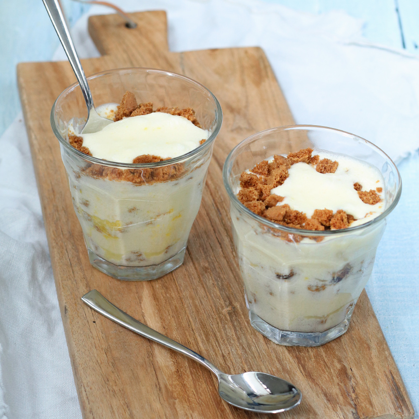

Mousse van limoncello met Bastogne
Ingrediënten
- 2 eieren
- 40 gr suiker
- 100 ml slagroom
- 50 ml limoncello
- 1 citroen
- 2 gelatineblaadjes
- 1 eetlepel poedersuiker
- 10 bastogne koekjes
Benodigdheden
- 4 kleine glaasjes
- Staafmixer
Bereidingswijze
- Laat de gelatineblaadjes weken in koud water zoals aangegeven op de verpakking.
- Rasp de schil van de citroen (bewaar de citroen voor later), en splits de eieren. Meng de eidooiers met het citroenrasp en de suiker en klop goed door.
- Pers de citroen uit en verwarm het citroensap in een klein pannetje. Voeg de geweekte gelatine hieraan toe en laat oplossen.
- Laat even afkoelen en roer door het eiermengsel. Roer daarna ook de limoncello erdoor.
- Neem twee kommen en klop in de één de eiwitten stijf met een (staaf)mixer en in de ander de slagroom met de poedersuiker.
- Spatel de inhoud van beide kommen voorzichtig door het eiermengsel.
- Breek de Bastogne koekjes in kleine stukjes. Schep een laagje Bastognekruimels op de bodem van de glaasjes met daarover een laag van het limoncello mengsel.
- Herhaal dit tot de glaasjes zijn gevuld.
- Zet de glaasjes minimaal 2 uur in de koelkast zodat de mousse kan opstijven.
